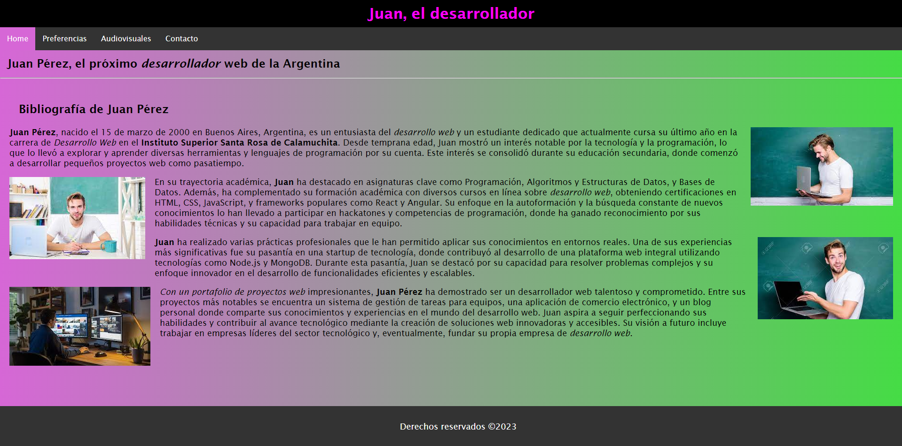

En mi segundo proyecto, me adentré en el mundo del CSS para darle estilo a una página web. Este proyecto se centró en los fundamentos del lenguaje CSS, como la aplicación de estilos a través de selectores, la manipulación de colores, fuentes y márgenes, y la creación de un diseño visualmente atractivo y responsivo. Aprendí a utilizar las propiedades de CSS para mejorar la presentación de los elementos HTML, logrando una página más estética y funcional.
